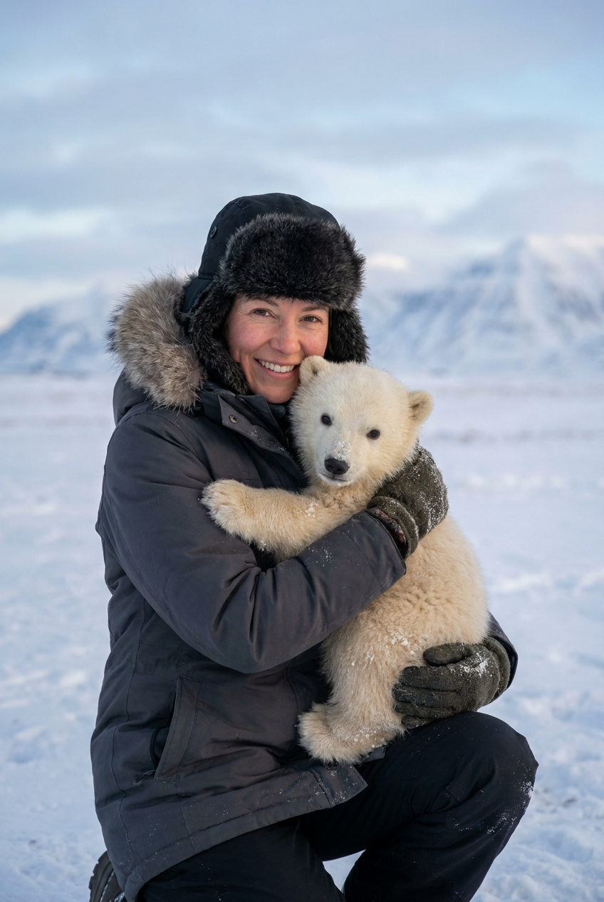
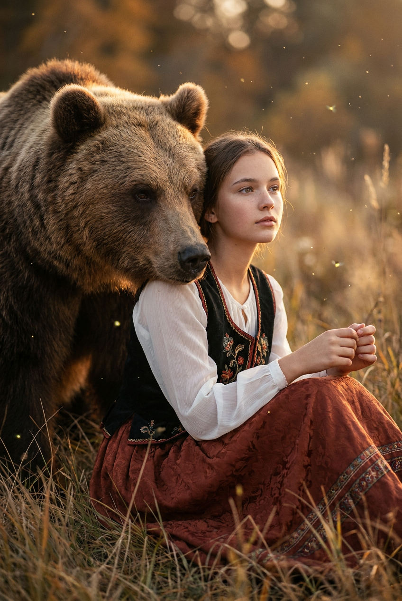
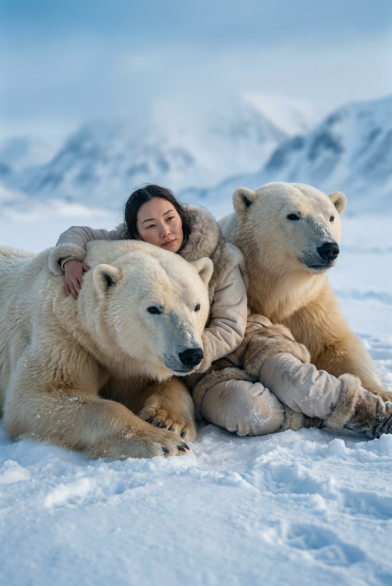
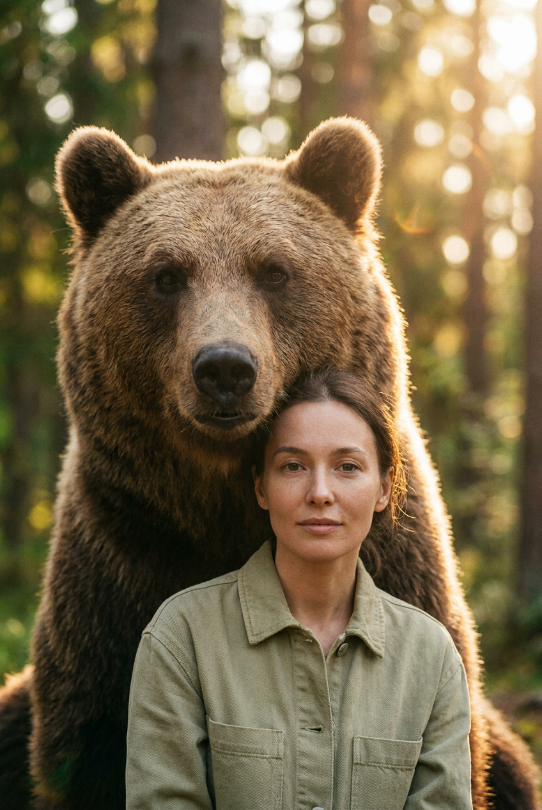
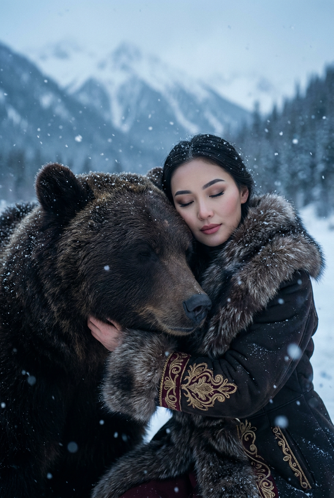
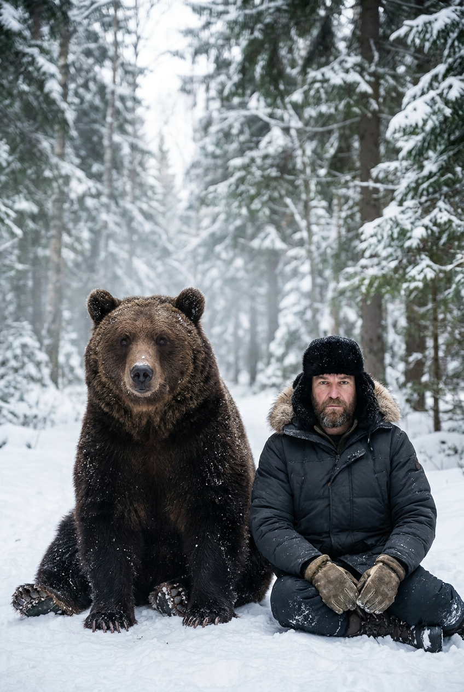
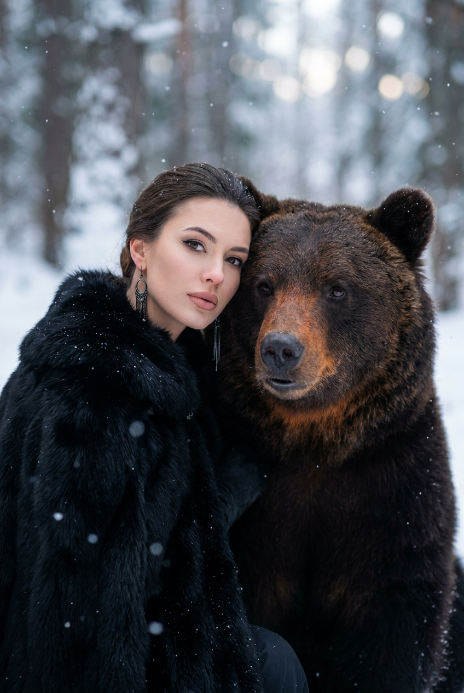
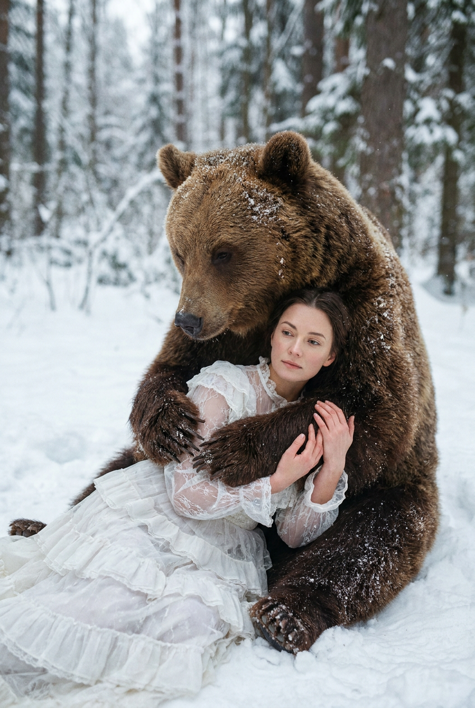
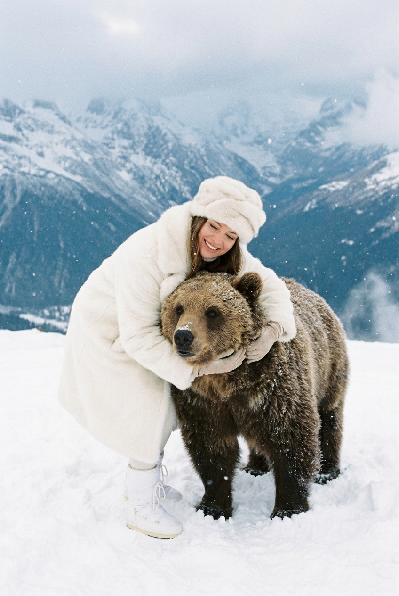
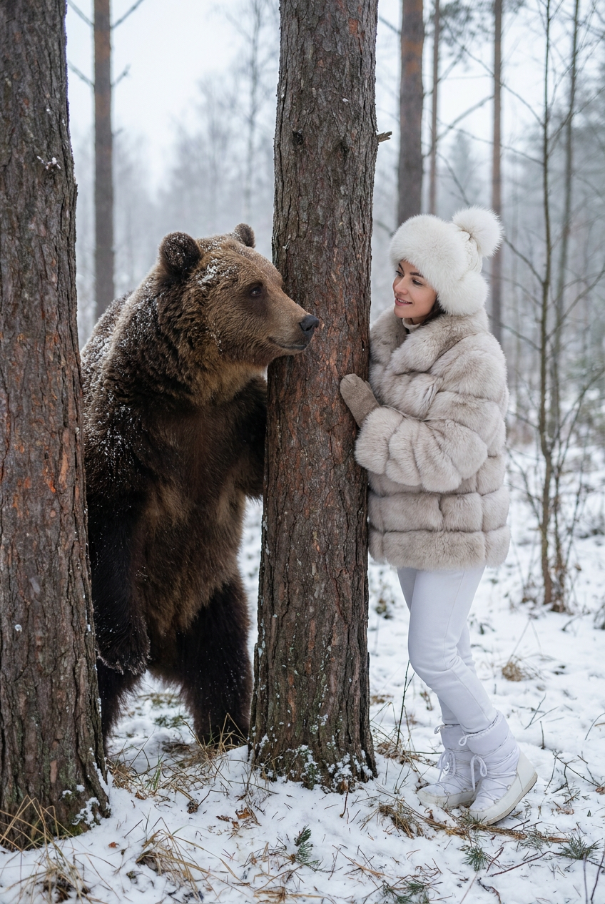

ИИ-фото с медведем: 10 промптов для нейросети

Снимок с медведем сложно получить даже в постановочной фотосессии: животное непредсказуемо, нужный свет бывает только несколько минут, а подходящий пейзаж не всегда рядом. Генерация решает эту задачу и позволяет собрать безопасный кадр с нужной эмоцией, одеждой и композицией.
В подборке — 10 сценариев для вертикальных ИИ-фото: от объятий с белым медвежонком в Арктике до портрета в зимнем лесу, этнического образа в траве и сцены, где герои прячутся за стволами деревьев. Каждый промпт рассчитан на фотореалистичный результат и работу с референсом лица.
Как сгенерировать такое фото: пошагово
Нужен снимок анфас при ровном свете, лицо в кадре целиком, без тёмных очков и головных уборов. Разрешение от 1000 пикселей по короткой стороне. Чем чётче исходник, тем точнее модель повторит черты.
Выберите сценарий ниже и нажмите «Копировать» — текст уйдёт в буфер целиком, вместе с командой сохранения внешности. Эта команда стоит первой строкой и отвечает за то, чтобы на выходе было ваше лицо, а не случайное.
Кнопка «Сгенерировать» рядом с каждым промптом открывает модель в новой вкладке. Nano Banana Pro работает с референсом лица — в отличие от моделей, которые генерируют портрет с нуля и узнаваемость теряют.
Промпт — в поле ввода, портрет — через загрузку референса. Порядок значения не имеет, но без референса команда сохранения внешности работать не будет: модели нечего сохранять.
Для сторис и ленты берите 9:16, для превью и обложек — 4:3. Первый результат редко идеален: если поза или свет ушли не туда, поправьте соответствующую часть промпта и запустите заново. Обычно хватает двух-трёх итераций.
10 промптов для генерации
1. Объятия с белым медвежонком
Строго сохранить внешность по загруженному референсу: черты лица, пропорции, мимику и текстуру кожи без изменений. Фотореалистичный кинематографичный кадр в вертикальном формате, ультравысокая детализация, заснеженная Арктика, голубоватый дневной свет и мягкие тени. На переднем плане девушка в легком приседе обнимает белого медвежонка обеими руками, прижимая его к груди и поддерживая переднюю часть тела. Она развернута к камере вполоборота, смотрит прямо в объектив и искренне улыбается. На ней темная зимняя куртка или парка, черная теплая шапка с серо-бежевой пушистой опушкой; часть волос выбивается из-под головного убора, макияж легкий дневной. Снег выглядит объемным, на шерсти медвежонка заметны отдельные ворсинки. Настроение теплое и радостное, без ощущения опасности. Реалистичная кожа, естественная мимика, точные пропорции лица по референсу, объектив 85 мм, малая глубина резкости, вертикаль 4:5, разрешение 1536×1920.
2. Этнический портрет в траве

Строго сохранить внешность по загруженному референсу: черты лица, пропорции, мимику и текстуру кожи без изменений. Вертикальный фотореалистичный портрет с кинематографичным теплым светом, ультравысокая детализация. Девушка в этническом сказочном образе сидит или полулежит среди высокой летней или осенней травы. Рядом, немного позади и выше ее плеча, находится крупный бурый медведь; он выглядит спокойным, объемным и реалистичным, без агрессивной позы. Девушка показана в профиль с мягким разворотом 3/4, смотрит в сторону, выражение задумчивое. У нее аккуратные брови и большие выразительные глаза светлого оттенка. На ней белая легкая полупрозрачная блуза с длинными рукавами, поверх — темно-бордовая или коричневая жилетка либо накидка с вышивкой и орнаментом. Теплый свет касается лица, трава слегка размыта на переднем плане, фон уходит в мягкое боке. Реалистичная текстура кожи и ткани, объектив 85 мм, вертикаль 4:5, разрешение 1536×1920.
3. Два медведя на снегу

Строго сохранить внешность по загруженному референсу: черты лица, пропорции, мимику и текстуру кожи без изменений. Кинематографичный фотореалистичный вертикальный кадр в зимней Арктике, ультравысокая детализация, голубое небо, вдали заснеженные горы и ледяные скалы. Женщина лежит или полусидит на снегу и нежно опирается на двух взрослых полярных медведей. Первый зверь находится слева ближе к камере: его голова в резком фокусе, спокойный взгляд направлен почти в объектив, густой мех имеет кремовые и белые оттенки, хорошо видна микротекстура ворса. Второй медведь справа расположен чуть дальше и своим телом образует для женщины мягкую опору. Женщина обнимает обоих, выглядит уверенно и нежно, без напряжения; поза естественная, контакт безопасный, пасти закрыты. Снег лежит на одежде и шерсти, свет холодный, но мягкий. Сохранить индивидуальные черты лица по референсу, натуральную мимику и пропорции. Объектив 50 мм, глубина резкости умеренная, вертикаль 4:5, разрешение 1536×1920.
4. Лесной портрет с медведем

Строго сохранить внешность по загруженному референсу: черты лица, пропорции, мимику и текстуру кожи без изменений. Фотореалистичный fantasy-портрет в вертикальной композиции, кинематографичный лесной свет, ультравысокая детализация. На переднем плане девушка слегка повернута к камере и смотрит прямо перед собой. Ее выражение мечтательное, немного отрешенное и спокойное: расслабленные губы, мягкий взгляд, естественная кожа с видимой текстурой, аккуратный макияж. На ней светло-оливковая или зеленая рубашка-жакет с пуговицами; ткань мягкая, натуральная, у воротника заметны складки. Сразу за девушкой стоит большой взрослый бурый медведь, его массивная фигура частично закрывает одежду и создает выразительную тень. Шерсть густая, коричневая, с отдельными волосками на морде, взгляд спокойный, пасть закрыта. Фон — темный лес с рассеянными зелеными бликами и легкой дымкой. Реалистичные пропорции лица по референсу, объектив 85 мм, диафрагма f/2, вертикаль 4:5, разрешение 1536×1920.
5. Нежные объятия в снегу

Строго сохранить внешность по загруженному референсу: черты лица, пропорции, мимику и текстуру кожи без изменений. Крупный вертикальный фотореалистичный портрет в атмосфере зимней сказки, ультравысокая детализация, заснеженный горный пейзаж и холодный рассеянный свет. Слева в кадре находится большой бурый медведь почти черного или темно-коричневого оттенка, с теплыми переходами цвета на морде и лапах. Его шерсть густая, детализированная, нос темный, пасть закрыта, взгляд мягкий и спокойный; на ворсе видны холодные световые блики. Справа стоит женщина и прижимается щекой или верхней частью лица к голове зверя. Ее глаза закрыты либо полуприкрыты, выражение доверительное, нежное и расслабленное. Они обнимаются, но поза остается естественной, без ощущения постановочной борьбы. На лице женщины сохранить индивидуальные черты, натуральную мимику и пропорции по референсу. Съемка на объектив 85 мм, малая глубина резкости, детальная кожа и мех, вертикаль 4:5, разрешение 1536×1920.
6. Мужчина на снежной поляне

Фотореалистичный кинематографичный портрет в вертикальном формате, зимний хвойный лес и заснеженная поляна, ультравысокая детализация. Слева сидит крупный взрослый бурый медведь, занимающий большую часть кадра. Он устойчиво опирается на снег, передние лапы широко раздвинуты, корпус приземленный, вес распределен естественно. Голова повернута к камере, пасть закрыта, выражение серьезное, но спокойное. На густой коричнево-шоколадной шерсти лежат снежинки и мелкие частицы снега, у носа и на щеках видны отдельные волоски, глаза реалистично отражают рассеянный свет. Рядом справа сидит мужчина, повернутый к зверю и камере; его поза расслабленная, одежда зимняя, нейтральных темных оттенков. Между ними нет агрессии, сцена выглядит как тихое соседство. Сохранить внешность мужчины по референсу, объектив 50 мм, диафрагма f/2.8, вертикаль 4:5, разрешение 1536×1920.
7. Портрет рядом с медведем

Строго сохранить внешность по загруженному референсу: черты лица, пропорции, мимику и текстуру кожи без изменений. Вертикальный крупный план в стиле зимней сказки, фотореализм, ультравысокая детализация. Слева находится девушка, справа и немного позади — большой бурый медведь; их головы почти соприкасаются. Девушка повернута к камере, зверь смотрит чуть в сторону объектива. Оба выглядят спокойно, пасть медведя закрыта, в выражении нет угрозы. У девушки ровная кожа с натуральной текстурой, выразительные глаза, аккуратные брови и четкий контур губ. Макияж вечерний и холодный: заметная подводка или стрелки, матовые либо сатиновые губы нюдово-розового оттенка. На ней длинные серьги из темного металла с декоративными элементами без логотипов и читаемых надписей, а также зимняя одежда с фактурным воротником. У медведя густая коричневая шерсть с мягкими световыми переходами. Сохранить лицо по референсу, использовать объектив 85 мм, мягкий контровой свет, вертикаль 4:5, разрешение 1536×1920.
8. Белое платье и бурый медведь

Строго сохранить внешность по загруженному референсу: черты лица, пропорции, мимику и текстуру кожи без изменений. Фотореалистичный вертикальный кадр в заснеженном лесу, ультравысокая детализация, мягкий зимний свет и сказочная атмосфера. На поляне девушка в полностью белом романтичном платье лежит или приседает на снегу, корпус развернут вполоборота. Руки аккуратно прижаты к себе и мягко обнимают медведя в районе передних лап. Ее взгляд опущен, губы расслаблены, настроение задумчивое, доверительное и нежное. Платье многослойное, с воланами и рюшами, объемной юбкой, легкой полупрозрачностью отдельных слоев из тюля или кружева; ткань собирается естественными складками и слегка касается снега. Над девушкой стоит крупный взрослый бурый медведь с мощным телом и густой коричнево-шоколадной шерстью. Он смотрит спокойно, сохраняет устойчивую позу, пасть закрыта. Реалистичная кожа, мех и снег, лицо по референсу без изменения черт, объектив 50 мм, вертикаль 4:5, разрешение 1536×1920.
9. Объятия на горной вершине

Строго сохранить внешность по загруженному референсу: черты лица, пропорции, мимику и текстуру кожи без изменений. Кинематографичный фотореалистичный кадр в вертикальном формате, зимняя альпийская вершина, ультравысокая детализация, чистый холодный воздух и мягкий дневной свет. Девушка стоит на снегу в полностью белом образе: объемная меховая шуба или пальто, белая меховая шапка с мягкими складками, светлые перчатки и белые зимние сапоги или угги. Она крепко и тепло обнимает крупного взрослого бурого медведя с мощным телосложением и густой шерстью коричневых оттенков. Медведь стоит устойчиво, голова повернута к камере, пасть закрыта, взгляд спокойный, морда дружелюбная. Девушка улыбается и выглядит счастливой и уверенной; объятие кажется искренним, но анатомически правдоподобным. На заднем плане — снежные склоны, дальние горы и светлое небо, без лишних людей и предметов. Сохранить черты лица по референсу, объектив 35 мм, вертикаль 4:5, разрешение 1536×1920.
10. Встреча у лесных стволов

Строго сохранить внешность по загруженному референсу: черты лица, пропорции, мимику и текстуру кожи без изменений. Фотореалистичный кинематографичный кадр в вертикальной композиции, заснеженный лес с редкими деревьями и пасмурным дневным светом. На переднем плане расположены два толстых ствола: один ближе к центру, второй справа. Композиция создает ощущение, будто герои частично скрываются за деревьями. Слева возле ствола стоит большой взрослый бурый медведь с густой шерстью коричневых оттенков. Он сохраняет устойчивую позу, голова повернута к девушке, взгляд направлен на нее, пасть закрыта, выражение мягкое и спокойное. Справа у другого дерева стоит девушка в зимней одежде, ее корпус немного развернут к зверю; между ними ощущается тихий интерес и доверие, без агрессии. В воздухе легкая снежная дымка, кора и мех прорисованы подробно, фон уходит в серо-зеленое размытие. Сохранить индивидуальные черты лица по референсу, объектив 50 мм, диафрагма f/2.8, вертикаль 4:5, разрешение 1536×1920.
Что важно учесть в этом стиле
Реализм держится на согласованном масштабе. Взрослый медведь должен быть заметно крупнее человека, но его лапы, суставы и вес нужно описывать так, чтобы поза не выглядела игрушечной. Для спокойной сцены отдельно указывайте закрытую пасть, устойчивую опору и мягкий взгляд.
Для портрета с референсом задавайте вертикаль 4:5, объектив 50 или 85 мм и умеренную глубину резкости. Так лицо останется главным объектом, а мех и пейзаж получат естественное размытие. В снежных сценах полезно уточнять оттенок света: холодный голубой для Арктики, рассеянный серый для леса, теплый боковой для сказочного портрета.
Идеи для вариаций
- Замените снег на туманное утро в тайге и добавьте мокрые следы лап.
- Попросите медведя стоять у воды на фоне отражения гор.
- Сделайте вечерний кадр с фонарем, легким снегопадом и теплым контровым светом.
- Добавьте этнические узоры на жилет, шарф или ремень без читаемых символов.
- Поменяйте белое платье на длинный серый плащ, сохранив мягкую позу.
- Для мужского сюжета используйте кожаную куртку, шерстяной свитер и походный рюкзак.
Как собрать свой промпт
Начните с формата и жанра: «вертикальный фотореалистичный портрет, объектив 85 мм, разрешение 1536×1920». Затем задайте локацию, погоду и свет. После этого опишите человека: положение тела, направление взгляда, одежду, макияж и эмоцию. Медведя лучше описывать отдельным блоком — размер, цвет шерсти, положение лап, поворот головы и состояние пасти.
В конце добавьте ограничения: без агрессии, без лишних конечностей, без деформации лица, без текста и логотипов. Если лицо по референсу получается нестабильным, сначала сгенерируйте спокойный крупный портрет, а затем перенесите его в сцену. Для хорошего результата заложите 4–8 попыток и меняйте по одному параметру за раз.
Ошибки, из-за которых кадр не получается
- Слишком общая сцена. Фраза «девушка рядом с медведем» не задает ни позу, ни масштаб, поэтому персонажи часто сливаются.
- Противоречивый свет. Не смешивайте яркое полуденное солнце с пасмурным лесом и холодными тенями.
- Неправильный контакт. Укажите, где находятся руки, лапы и опора, иначе конечности могут деформироваться.
- Слишком малая дистанция. Для крупного медведя лучше описывать объятие сбоку или опору на корпус, а не неестественное сцепление тел.
- Перегруженная одежда. Десяток фактур и аксессуаров конкурируют с лицом; оставляйте 2–3 главных детали.
- Нет запрета на текст. Добавляйте «без логотипов, надписей и водяных знаков», особенно если в кадре есть украшения или орнаменты.
Частые вопросы
Как сделать такое ИИ-фото бесплатно?
Можно попробовать Kandinsky и Шедеврум: у них есть бесплатная генерация, но число попыток, скорость и доступ к отдельным функциям могут меняться. Krea AI и Arena.ai позволяют тестировать разные модели, однако бесплатный режим обычно ограничен очередью, кредитами или разрешением. Работа с референсом лица поддерживается не одинаково: где-то доступна загрузка изображения, а где-то придется описывать внешность текстом. Не используйте чужие фотографии без согласия и проверяйте правила сервиса.
Как сохранить лицо по загруженному референсу?
Используйте четкий портрет анфас или в легком развороте, без очков, сильных теней и фильтров. В промпте сначала опишите сцену, а затем попросите сохранить индивидуальные черты, пропорции и естественную мимику. Если лицо меняется, уменьшите количество деталей в одежде и фоне, сделайте крупнее план и повторите генерацию.
Как добиться реалистичного медведя?
Укажите вид, возраст, размер, цвет и структуру шерсти, а также положение лап и головы. Добавьте закрытую пасть, спокойный взгляд и естественное распределение веса. Хорошо работают конкретные параметры съемки: объектив 50–85 мм, мягкий рассеянный свет, умеренная глубина резкости и высокая детализация меха.
Какой формат выбрать для публикации в соцсетях?
Для портретных историй подойдет вертикаль 4:5, например 1536×1920 пикселей. Если изображение нужно для сторис или короткого видео, используйте соотношение 9:16 и заранее оставьте свободное место сверху или снизу под интерфейс. Не просите сразу слишком маленькое разрешение: детали лица и шерсти будут теряться при увеличении.